전기기능사 (2013-04-14 기출문제)
1과목: 전기 이론
1. 히스테리시스 곡선에서 가로축과 만나는 점과 관계있는 것은?
- 보자력
- 잔류자기
- 자속밀도
- 기자력
(정답률: 74%)

2. 1[Ah]는 몇 [C] 인가?
- 1200
- 2400
- 3600
- 4800
(정답률: 93%)
3. [VA]는 무엇의 단위인가?
- 피상전력
- 무효전력
- 유효전력
- 역률
(정답률: 78%)
4. 정전용량이 10[μF]인 콘덴서 2개를 병렬로 했을 때의 합성 정전용량은 직렬로 했을 때의 합성 정전용량 보다 어떻게 되는가?
- 1/4로 줄어든다.
- 1/2로 줄어든다.
- 2배로 늘어난다.
- 4배로 늘어난다.
(정답률: 70%)
5. 납축전지의 전해액으로 사용되는 것은?(오류 신고가 접수된 문제입니다. 반드시 정답과 해설을 확인하시기 바랍니다.)
- H2SO4
- H2O
- PbO2
- PbSO4
(정답률: 67%)
6. 그림과 같이 공기 중에 놓인 2×10-8[C]의 전하에서 2[m] 떨어진 점 P와 1[m] 떨어진 점 Q와의 전위차는?
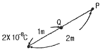
- 80[V]
- 90[V]
- 100[V]
- 110[V]
(정답률: 76%)
7. 어떤 사인파 교류전압의 평균값이 191[V]이면 최대값은?
- 150[V]
- 250[V]
- 300[V]
- 400[V]
(정답률: 62%)
8. △결선 Vι(선간전압), Vp(상전압), Iι(선전류), Ip(상전류)의 관계식으로 옳은 것은?
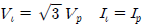
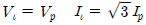
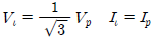
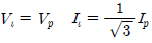
(정답률: 63%)
9. 변압기 2대를 V결선 했을 때의 이용률은 몇[%]인가?
- 57.7[%]
- 70.7[%]
- 86.6[%]
- 100[%]
(정답률: 68%)
10. 50회 감은 코일과 쇄교하는 자속이 0.5[sec] 동안 0.1[Wb]에서 0.2[Wb]로 변화하였다면 기전력의 크기는?
- 5[V]
- 10[V]
- 12[V]
- 15[V]
(정답률: 64%)
11.
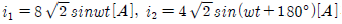
과의 차에 상당한 전류의 실효값은?- 4[A]
- 6[A]
- 8[A]
- 12[A]
(정답률: 43%)
12. 제벡 효과에 대한 설명으로 틀린 것은?
- 두 종류의 금속을 접속하여 폐회로를 만들고, 두 접속점에 온도의 차이를 주면 기전력이 발생하여 전류가 흐른다.
- 열기전력의 크기와 방향은 두 금속 점의 온도차에 따라서 정해진다.
- 열전쌍(열전대)은 두 종류의 금속을 조합한 장치이다.
- 전자 냉동기, 전자 온풍기에 응용된다.
(정답률: 67%)
13. 그림과 같은 비사인파의 제3고조파 주파수는? (단, V=20[V], T=10[㎳] 이다.)
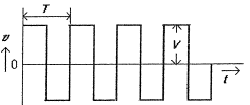
- 100[㎐]
- 200[㎐]
- 300[㎐]
- 400[㎐]
(정답률: 50%)
14. Q1으로 대전된 용량 C1의 콘덴서에 용량 C2를 병렬 연결할 경우 C2가 분배 받는 전기량은?
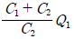
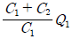
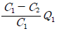
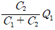
(정답률: 62%)
15. 반지름 50[cm], 권수 10[회]인 원형 코일에 0.1[A]의 전류가 흐를 때, 이 코일 중심의 자계의 세기 H는?
- 1[AT/m]
- 2[AT/m]
- 3[AT/m]
- 4[AT/m]
(정답률: 54%)
16. 리액턴스가 10[Ω]인 코일에 직류전압 100[V]를 하였더니 전력 500[W]를 소비하였다. 이 코일의 저항은 얼마 인가?
- 5[Ω]
- 10[Ω]
- 20[Ω]
- 25[Ω]
(정답률: 44%)
17. 도체가 자기장에서 받는 힘의 관계 중 틀린 것은?
- 자기력선속 밀도에 비례
- 도체의 길이에 반비례
- 흐르는 전류에 비례
- 도체가 자기장과 이루는 각도에 비례 (0° ~ 90°)
(정답률: 53%)
18. 자력선의 성질을 설명한 것이다. 옳지 않은 것은?
- 자력선은 서로 교차하지 않는다.
- 자력선은 N극에서 나와 S극으로 향한다.
- 진공 중에서 나오는 자력선의 수는 m개이다.
- 한 점의 자력선 밀도는 그 점의 자장의 세기를 나타낸다.
(정답률: 64%)
19. 임피던스 Z1=12+j16[Ω]과 Z2=8+j24[Ω]이 직렬로 접속된 회로에 전압 V=200[V]를 가할 때 이 회로에 흐르는 전류[A]는?
- 2.35[A]
- 4.47[A]
- 6.02[A]
- 10.25[A]
(정답률: 55%)
20. 100[V]의 전위차로 가속된 전자의 운동 에너지는 몇 [J]인가?
- 1.6×10-20[J]
- 1.6×10-19[J]
- 1.6×10-18[J]
- 1.6×10-17[J]
(정답률: 52%)
2과목: 전기 기기
21. 동기 전동기를 송전선의 전압 조정 및 역률 개선에 사용한 것을 무엇이라 하는가?
- 동기 이탈
- 동기 조상기
- 댐퍼
- 제동권선
(정답률: 72%)
22. 변압기의 자속에 관한 설명으로 옳은 것은?
- 전압과 주파수에 반비례한다.
- 전압과 주파수에 비례한다.
- 전압에 반비례하고 주파수에 비례한다.
- 전압에 비례하고 주파수에 반비례한다.
(정답률: 53%)
23. 직류전동기 운전 중에 있는 기동 저항기에서 정전이 되거나 전원 전압이 저하되었을 때 핸들을 기동 위치에 두어 전압이 회복될 때 재 기동 할 수 있도록 역할을 하는 것은?
- 무전압계전기
- 계자제어기
- 기동저항기
- 과부하개방기
(정답률: 44%)
24. 직류전동기의 전기자에 가해지는 단자전압을 변화하여 속도를 조정하는 제어법이 아닌 것은?
- 워드 레오나드 방식
- 일그너 방식
- 직·병렬 제어
- 계자 제어
(정답률: 48%)
25. 다음 중 거리 계전기의 설명으로 틀린 것은?
- 전압과 전류의 크기 및 위상차를 이용한다.
- 154[kV] 계통 이상의 송전선로 후비 보호를 한다.
- 345[kV] 변압기의 후비 보호를 한다.
- 154[kV] 및 345[kV] 모선 보호에 주로 사용한다.
(정답률: 45%)
26. 전압을 일정하게 유지하기 위해서 이용되는 다이오드는?
- 발광 다이오드
- 포토 다이오드
- 제너 다이오드
- 바리스터 다이오드
(정답률: 81%)
27. 동기임피던스 5[Ω]인 2대의 3상 동기 발전기의 유도 기전력에 100[V]의 전압 차이가 있다면 무효순환전류[A]는?
- 10
- 15
- 20
- 25
(정답률: 48%)
28. 3상 66000[kVA], 22900[V] 터빈 발전기의 정격전류는 약 몇[A]인가?
- 8764
- 3367
- 2882
- 1664
(정답률: 37%)
29. 변압기의 권선 배치에서 저압 권선을 철심에 가까운 쪽에 배치하는 이유는?
- 전류 용량
- 절연 문제
- 냉각 문제
- 구조상 편의
(정답률: 65%)
30. 6극 36슬롯 3상 동기 발전기의 매극, 매상당, 슬롯수는?
- 2
- 3
- 4
- 5
(정답률: 71%)
31. 동기속도 3600[rpm], 주파수 60[㎐]의 동기 발전기의 극수는?
- 2극
- 4극
- 6극
- 8극
(정답률: 63%)
32. 다음 중 2단자 사이리스터가 아닌 것은?
- SCR
- DIAC
- SSS
- Diode
(정답률: 60%)
33. 유도 전동기에 기계적 부하를 걸었을 때 출력에 따라 속도, 토크, 효율, 슬립 등이 변화를 나타낸 출력특성곡선에서 슬립을 나타내는 곡선은?
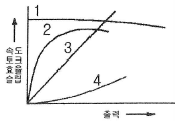
- 1
- 2
- 3
- 4
(정답률: 55%)
34. 변압기를 운전하는 경우 특성의 악화, 온도상승에 수반되는 수명의 저하, 기기의 소손 등의 이유 때문에 지켜야 할 정격이 아닌 것은?
- 정격 전류
- 정격 전압
- 정격 저항
- 정격 용량
(정답률: 50%)
35. 직류 직권 전동기의 회전수(N)와 토크(τ)와의 관계는?
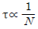
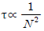
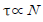
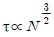
(정답률: 64%)
36. 변압기 절연내력 시험 중 권선의 층간 절연시험은?
- 충격전압 시험
- 무부하 시험
- 가압 시험
- 유도 시험
(정답률: 35%)
37. 직류발전기에서 전압 정류의 역할을 하는 것은?(오류 신고가 접수된 문제입니다. 반드시 정답과 해설을 확인하시기 바랍니다.)
- 보극
- 탄소브러시
- 전기자
- 리액턴스 코일
(정답률: 55%)
38. 직류 복권 발전기의 직권 계자권선은 어디에 설치되어 있는가?
- 주자극 사이에 설치
- 분권 계자권선과 같은 철심에 설치
- 주자극 표면에 홈을 파고 설치
- 보극 표면에 홈을 파고 설치
(정답률: 51%)
39. 가정용 선풍기나 세탁기 등에 많이 사용되는 단상 유도 전동기는?(문제오류로 2, 3번이 정답 처리된 문제입니다. 여기서는 3번을 누르면정답 처리 됩니다. 자세한 내용은 해설을 참고하세요.)
- 분상 기동형
- 콘덴서 기동형
- 영구 콘덴서 전동기
- 반발 기동형
(정답률: 71%)
40. 변압기 내부고장에 대한 보호용으로 가장 많이 사용되는 것은?
- 과전류 계전기
- 차동 임피던스
- 비율차동 계전기
- 임피던스 계전기
(정답률: 87%)
3과목: 전기 설비
41. 금속 덕트 공사에 있어서 전광표시장치, 출퇴표시장치 등 제어 회로용 배선만을 공사할 때 절연전선의 단면적은 금속 덕트내 몇 [%] 이하이어야 하는가?
- 80
- 70
- 60
- 50
(정답률: 49%)
42. 주상 작업을 할 때 안전 허리띠용 로프는 허리 부분보다 위로 약 몇 [°] 정도 높게 걸어야 가장 안전한가?(문제오류로 실제 시험에서는 모두 정답처리되었습니다. 여기서는 2번을 누르면 정답처리됩니다.)
- 5 ~ 10°
- 10 ~ 15°
- 15 ~ 20°
- 20 ~ 30°
(정답률: 77%)
43. 저압 가공 인입선의 인입구에 사용하며 금속관 공사에서 끝 부분의 빗물 침입을 방지하는데 적당한 것은?
- 플로어 박스
- 엔트런스 캡
- 부싱
- 터미널 캡
(정답률: 61%)
44. 옥내 분전반의 설치에 관한 내용 중 틀린 것은?
- 분전반에서 분기회로를 위한 배관의 상승 또는 하강이 용이한 곳에 설치한다.
- 분전반에 넣는 금속제의 함 및 이를 지지하는 구조물은 접지를 하여야 한다.
- 각 층마다 하나 이상을 설치하나, 회로수가 6이하인 경우 2개층을 담당할 수 있다.
- 분전반에서 최종 부하까지의 거리는 40[m] 이내로 하는 것이 좋다.
(정답률: 60%)
45. 합성수지제 전선관의 호칭은 관 굵기의 무엇으로 표시 하는가?
- 홀수인 안지름
- 짝수인 바깥지름
- 짝수인 안지름
- 홀수인 바깥지름
(정답률: 64%)
46. 단면적 6[mm2]의 가는 단선의 직선 접속 방법은?
- 트위스트 접속
- 종단 접속
- 종단 겹침용 슬리브 접속
- 꽂음형 커넥터 접속
(정답률: 82%)
47. 전선 단면적 2.5[㎟], 접지선 1본을 포함한 전선가닥 수 6본을 동일 관내에 넣는 경우의 제2종 가요 전선관의 최소 굵기로 적당한 것은?
- 10[㎜]
- 15[㎜]
- 17[㎜]
- 24[㎜]
(정답률: 29%)
48. 지선의 시설에서 가공 전선로의 직선부분이란 수평각도 몇 도 까지 인가?
- 2
- 3
- 5
- 6
(정답률: 46%)
49. 접착력은 떨어지나 절연성, 내온성, 내유성이 좋아 연피 케이블의 접속에 사용되는 테이프는?
- 고무 테이프
- 리노 테이프
- 비닐 테이프
- 자기 융착 테이프
(정답률: 77%)
50. 사용전압 415[V]의 3상 3선식 전선로의 1선과 대지간에 필요한 절연 저항값의 최소값은? (단, 최대공급전류는 500[A]이다.)
- 2560[Ω]
- 1660[Ω]
- 3210[Ω]
- 4512[Ω]
(정답률: 46%)
51. 간선에서 분기하여 분기 과전류차단기를 거쳐서 부하에 이르는 사이의 배선을 무엇이라 하는가?
- 간선
- 인입선
- 중성선
- 분기회로
(정답률: 51%)
52. 저압 옥내 간선으로부터 분기하는 곳에 설치하여야 하는 것은?
- 지락 차단기
- 과전류 차단기
- 누전 차단기
- 과전압 차단기
(정답률: 53%)
53. 저압 옥내 간선에 사용되는 전선에 관한 사항이다. 간선에 접속하는 전동기 등의 정격전류의 합계가 50[A]를 초과하는 경우에 그 정격전류의 합계의 몇 배의 허용전류가 있는 전선 이어야 하는가?
- 0.8
- 1.1
- 1.25
- 3.0
(정답률: 64%)
54. 흥행장의 저압 배선 공사 방법으로 잘못된 것은?(오류 신고가 접수된 문제입니다. 반드시 정답과 해설을 확인하시기 바랍니다.)
- 전선 보호를 위해 적당한 방호장치를 할 것
- 무대나 영사실 등의 사용전압은 400[V] 미만일 것
- 무대용 콘센트, 박스의 금속제 외함은 특별 제3종 접지공사를 할 것
- 전구 등의 온도 상승 우려가 있는 기구류는 무대막, 목조의 마루 등과 접촉하지 않도록 할 것
(정답률: 68%)
55. 전등 1개를 2개소에서 점멸하고자 할 때 필요한 3로 스위치는 최소 몇 개인가?
- 1개
- 2개
- 3개
- 4개
(정답률: 95%)
56. 그림의 전자계전기 구조는 어떤 형의 계전기인가?
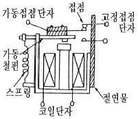
- 힌지형
- 플런저형
- 가동코일형
- 스프링형
(정답률: 45%)
57. 해안지방의 송전용 나전선에 가장 적당한 것은?
- 철선
- 강심알루미늄선
- 동선
- 알루미늄합금선
(정답률: 52%)
58. 사용전압이 400[V] 미만인 케이블공사에서 케이블을 넣는 방호장치의 금속제 부분 및 금속제의 전선 접속함은 몇 종 접지 공사를 하여야 하는가?(관련 규정 개정전 문제로 여기서는 기존 정답인 3번을 누르면 정답 처리됩니다. 자세한 내용은 해설을 참고하세요.)
- 제1종
- 제2종
- 제3종
- 특별3종
(정답률: 69%)
59. 배선설계를 위한 전등 및 소형 전기기계기구의 부하용량 산정시 건축물의 종류에 대응한 표준부하에서 원칙적으로 표준부하를 20[VA/m2]으로 적용하여야 하는 건축물은?(오류 신고가 접수된 문제입니다. 반드시 정답과 해설을 확인하시기 바랍니다.)
- 교회, 극장
- 학교, 음식점
- 은행, 상점
- 아파트, 미용원
(정답률: 60%)
60. 성냥을 제조하는 공장의 공사 방법으로 적당하지 않는 것은?
- 금속관 공사
- 케이블 공사
- 합성수지관 공사
- 금속 몰드 공사
(정답률: 69%)